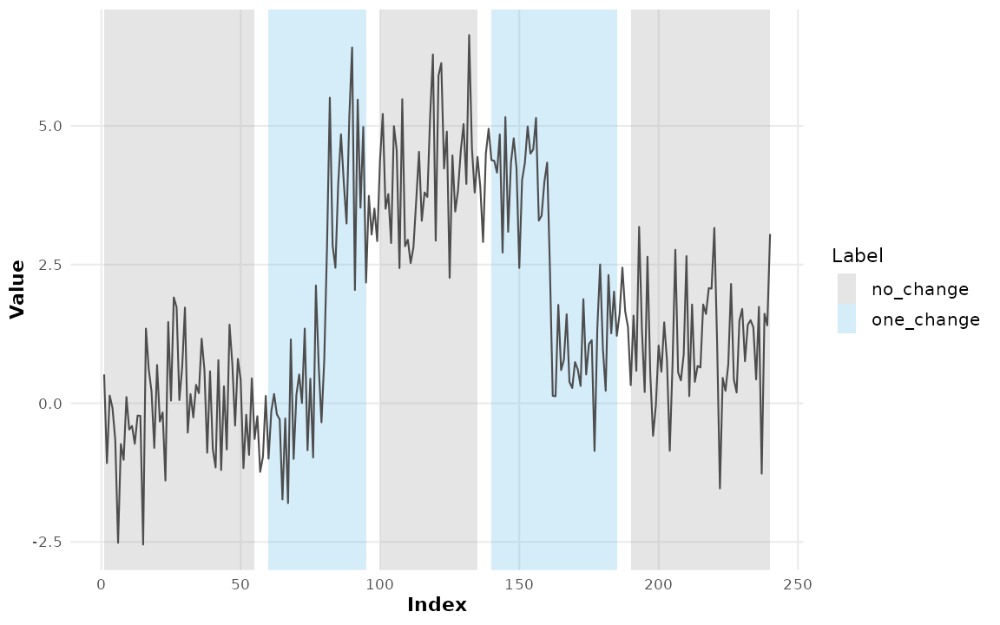
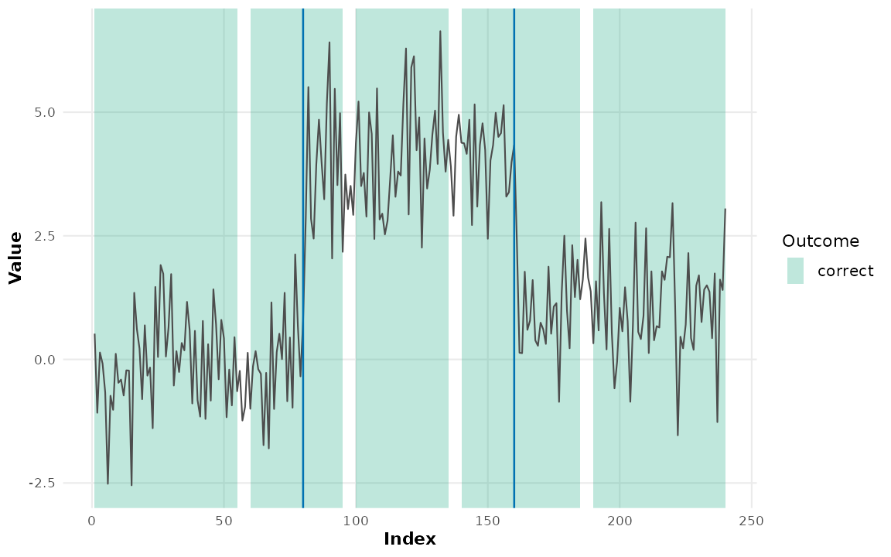
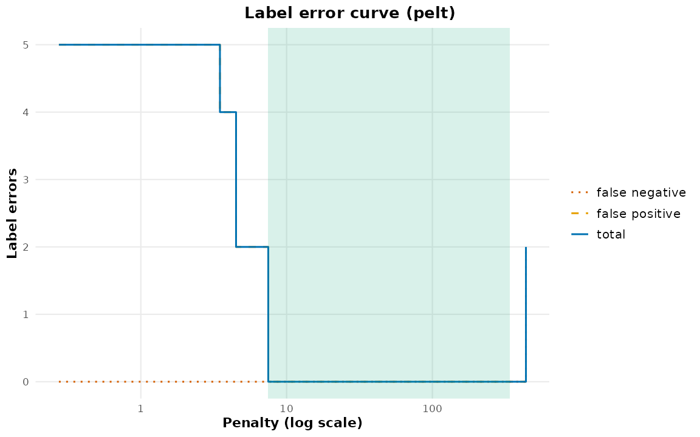

Supervised Changepoint Detection
Youzhi
Yu
University of Chicago
Source: vignettes/supervised.Rmd
supervised.RmdAlmost every changepoint method in this package is unsupervised: it picks a penalty by an information criterion and hopes the criterion matches what you would have said. Supervised changepoint detection (Hocking et al. 2013) does something different. An expert marks regions of the series as containing a change or not, accuracy is measured in label errors against those marks, and the penalty is learned from them.
Three things make it worth a vignette of its own:
- it consistently beats unsupervised penalties on labelled data;
- it gives a defensible answer to “what penalty should I use?” that does not depend on a modelling assumption;
- its central object is a rectangle drawn over a time series, which is a ggplot2-native idea with no ggplot2-native implementation elsewhere.
Labels
A label is a stretch of the series with an assertion attached.
set.seed(2026)
x <- c(rnorm(80), rnorm(80, 4), rnorm(80, 1))
labs <- cpt_labels(
start = c( 1, 60, 100, 140, 190),
end = c( 55, 95, 135, 185, 240),
change = c("no_change", "one_change", "no_change", "one_change",
"no_change")
)
labs
#> # A tibble: 5 × 5
#> label_id series start end change
#> <int> <chr> <int> <int> <chr>
#> 1 1 NA 1 55 no_change
#> 2 2 NA 60 95 one_change
#> 3 3 NA 100 135 no_change
#> 4 4 NA 140 185 one_change
#> 5 5 NA 190 240 no_changeThree kinds, and the distinction matters:
-
"change"— at least one changepoint lies here. -
"one_change"— exactly one does. Stricter, and the only one that makes a false positive inside a positive region detectable. -
"no_change"— none does. Without these, a detector is never penalised for a false positive, and the learned penalty collapses to zero.
Because labels are just a tidy tibble, they draw directly:
d <- data.frame(t = seq_along(x), y = x)
ggplot(d, aes(t, y)) +
geom_cpt_label(aes(xmin = start, xmax = end, fill = change), data = labs) +
geom_line(colour = "grey30") +
scale_fill_cpt_label() +
labs(fill = "Label", x = "Index", y = "Value")
If you already have a plain ground-truth changepoint set — the kind
cpt_metrics() takes — as_cpt_labels() converts
it, positives and negatives together, so the package has one notion of
an annotation rather than two:
as_cpt_labels(c(80, 160), n = 240, margin = 5)
#> # A tibble: 5 × 5
#> label_id series start end change
#> <int> <chr> <int> <int> <chr>
#> 1 3 NA 1 74 no_change
#> 2 1 NA 75 85 one_change
#> 3 4 NA 86 154 no_change
#> 4 2 NA 155 165 one_change
#> 5 5 NA 166 239 no_changeScoring a segmentation
fit <- cpt_detect(x, method = "pelt")
err <- cpt_label_error(fit, labs)
err
#> cpt_label_error (5 label(s))
#> correct: 5 false positives: 0 false negatives: 0
#> total label errors: 0
#>
#> # A tibble: 5 × 7
#> label_id series start end change n_changes status
#> <int> <chr> <int> <int> <chr> <int> <chr>
#> 1 1 NA 1 55 no_change 0 correct
#> 2 2 NA 60 95 one_change 1 correct
#> 3 3 NA 100 135 no_change 0 correct
#> 4 4 NA 140 185 one_change 1 correct
#> 5 5 NA 190 240 no_change 0 correctThe three-colour status shading turns model evaluation into a picture:
ggplot(d, aes(t, y)) +
geom_cpt_label(aes(xmin = start, xmax = end, fill = status), data = err) +
geom_line(colour = "grey30") +
geom_changepoint(data = tidy(fit), aes(xintercept = cp),
colour = "#0072B2", linewidth = 0.6) +
scale_fill_cpt_label() +
labs(fill = "Outcome", x = "Index", y = "Value")
The label error curve
Label errors are a function of the penalty, and the shape of that function is what penalty learning is fitted to. It also answers a question worth asking before any fitting: can any penalty satisfy these labels?
curve <- cpt_label_error_curve(x, labs, method = "pelt")
curve
#> ggcpt_label_curve (method: pelt, 30 penalties)
#> Minimum label errors: 0
#> Target log-penalty interval: (2.013, 5.829)
#>
#> # A tibble: 30 × 5
#> penalty n_cp errors false_positive false_negative
#> <dbl> <int> <int> <int> <int>
#> 1 0.274 147 5 5 0
#> 2 0.353 142 5 5 0
#> 3 0.456 129 5 5 0
#> 4 0.588 115 5 5 0
#> 5 0.758 99 5 5 0
#> 6 0.978 84 5 5 0
#> 7 1.26 66 5 5 0
#> 8 1.63 55 5 5 0
#> 9 2.10 40 5 5 0
#> 10 2.71 26 5 5 0
#> # ℹ 20 more rows
autoplot(curve)
The shaded band is the target interval: the range of log-penalties achieving the minimum error. A wide interval means an easy series; a narrow one means the labels pin the penalty down tightly; an empty minimum at a non-zero error means no penalty satisfies all the labels, and the labels or the method need revisiting.
Learning the penalty
With several labelled series, the target intervals become the response in a max-margin interval regression: features of each series predict a log-penalty that lands inside its interval.
set.seed(5301)
series <- list(
a = c(rnorm(60), rnorm(60, 4)),
b = c(rnorm(80), rnorm(80, 2)),
c = c(rnorm(70), rnorm(70, 6)),
d = c(rnorm(100, 0, 3), rnorm(100, 9, 3))
)
labels <- list(
a = as_cpt_labels(60, n = 120),
b = as_cpt_labels(80, n = 160),
c = as_cpt_labels(70, n = 140),
d = as_cpt_labels(100, n = 200)
)
model <- cpt_learn_penalty(series, labels, penalties = 2^(0:10))
model
#> ggcpt_penalty_model (native interval regression)
#> Trained on 4 series with method `pelt`
#> Features: log_n, log_log_n, log_sd, log_mad, log_range, log_sd_diff, log_mad_diff, log_q90_abs_diff
#>
#> Coefficients (predicting log penalty):
#> intercept log_n log_log_n log_sd
#> 3.6976 -0.3293 -0.1116 0.4154
#> log_mad log_range log_sd_diff log_mad_diff
#> 0.4252 0.3666 0.3014 0.3730
#> log_q90_abs_diff
#> 0.2716
#>
#> Use it directly: cpt_detect(x, method = "pelt", penalty = model)The features are scale-free summaries on the log scale, which is why the fourth series — the same jump measured in units three times as wide — does not simply demand a different penalty from the first.
The model has a predict() method, and — the point of the
whole exercise — cpt_detect() takes it wherever a penalty
goes:
predict(model, series$d)
#> [1] 347.4854
cpt_detect(series$d, method = "pelt", penalty = model)
#> ggcpt (changepoint detection result)
#> Method: pelt
#> Change in: mean
#> Changepoints found: 1
#> CP convention: left
#> Penalty: Manual = 347.49
#> Series length: 200
#>
#> Changepoints:
#> # A tibble: 1 × 2
#> cp cp_value
#> <int> <dbl>
#> 1 100 -1.55So does cpt_penalty(), and so do the wrappers that
accept a numeric penalty:
cpt_penalty(model, series = series$d)
#> [1] 347.4854Compare that with the unsupervised default on the same series, which reads its penalty against a raw cost calibrated for unit noise:
nrow(cpt_detect(series$d, method = "pelt")$changepoints)
#> [1] 42
nrow(cpt_detect(series$d, method = "pelt", penalty = model)$changepoints)
#> [1] 1When penaltyLearning is installed,
cpt_learn_penalty() delegates the interval regression to
IntervalRegressionCV() and keeps the built-in squared-hinge
fit as a fallback, so the result is the published estimator whenever the
published implementation is available:
cpt_learn_penalty(series, labels, penalties = 2^(0:10),
engine = "native")$fit$engine
#> [1] "native"Where this fits
Labels are annotations, and annotations are also what
cpt_metrics_annotated() scores against. They are
deliberately the same shape here, so a single set of expert marks can
drive the metric, the plot and the penalty. The natural next step is
vignette("inference", package = "ggchangepoint"), which
covers what to do once the segmentation is fixed.